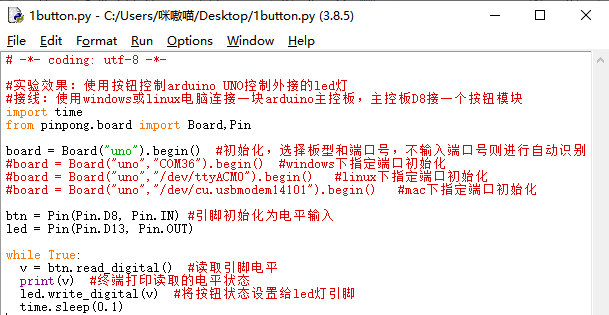

项目2 神奇的按键¶
一、概述¶
按钮开关，也称作按键开关，早期也称作敏感型开关，广泛应用在灯，插座总开关，门铃，汽车中控台等。按键开关的出现给用电安全增加了一层保护膜，方便控制电器的同时也进一步保护了元器件。
在Arduino 的学习过程中，我们会接触各种各样的输入设备，其中，按键开关是最简单 也是应用最广泛的一种。这里我们将用 Arduino 控制 LED 灯，实现按键按下开，再按下关的效果。
二、项目实施¶
（1）使用按钮点亮小灯¶
硬件准备：¶
主控：Arduino UNO、IO 传感器扩展板 V7.1
模块：LED发光模块、按钮模块
连接线：TypeAtoB方口USB连接线
将LED发光模块接入13号数字引脚，将按钮模块接入8号数字引脚
程序编写：¶
1、在示例程序中找到button.py，并用IDLE打开。
2、修改代码，将端口号修改为Arduino UNO连接的端口。（如何查看端口号在项目1中学习过）或删去端口号，使用自动识别。
3、摁下F5运行程序，查看效果。当摁下按钮时LED灯会亮起，松开会熄灭。

注意：在程序运行时不可以拔掉与Arduino连接的USB线，且不能关闭新弹出的Python shell运行窗口，如果拔线或者关闭运行窗口，程序功能就会停止执行。
（2）按钮开关灯¶
在上步完成的功能中,我们通过按键可以实现“按下按键-LED 亮”,“松开按键-LED 灭”,但实际运用的开关却是“首次按下打开,再次按下关闭”，我们将在本步中实现这个功能。
硬件准备：¶
主控：Arduino UNO、IO 传感器扩展板 V7.1
模块：LED发光模块、按钮模块
连接线：TypeAtoB方口USB连接线
硬件连接图：
将LED发光模块接入13号数字引脚，将按钮模块接入8号数字引脚
程序编写：¶
1、导入必要的包和初始化设置。
import sys
import time
from pinpong.pinpong import *
board = PinPong("uno","com5")
board.connect()
btn = Pin(board, Pin.D8, Pin.IN)
led = Pin(board, Pin.D13, Pin.OUT)
2、我们需要一个按键能够得到两个不同的结果，那么就需要设置一个中间值来实现切换状态的作用。所以首先我们要设置一个变量i=0。
i = 0
3、接着加入判断，判断按钮摁下的状态。为了方便设置，定义变量v为按钮的状态。
while True:
v = btn.value()
if (v == 1):
4、然后加入判断，借助i来区别状态，如逻辑图所示，每次摁下按钮时i的值会在0和1之间切换，借助i值的变化来确定LED灯的亮灭状态即可，根据逻辑完成代码。

import sys
import time
from pinpong.pinpong import *
board = PinPong("uno","com5")
board.connect()
btn = Pin(board, Pin.D8, Pin.IN)
led = Pin(board, Pin.D13, Pin.OUT)
i = 0
while True:
v = btn.value()
if (v == 1):
if (i == 1):
i = 0
led.value(0)
print("LED off")
else:
i = 1
led.value(1)
print("LED on")
time.sleep(0.5)
5、运行代码，摁下按钮可以切换LED灯的亮灭。

三、代码分析¶
import sys
import time
from pinpong.pinpong import * #导入必要的库函数
board = PinPong("uno","com5") #初始化设置板型和接口
board.connect() #连接aduino板，检测固件版本，若没有烧录或者版本有误，会烧录最新的固件
btn = Pin(board, Pin.D8, Pin.IN) #设置数字引脚8号的数字输入
led = Pin(board, Pin.D13, Pin.OUT) #设置数字引脚13号为数字输出
i = 0 #设置变量i=0
while True:
v = btn.value()
if (v == 1): #判断按钮按下
if (i == 1): #如果i=1就将i值变为0，并熄灭小灯
i = 0
led.value(0)
print('LED off')
else: #否则将i值变为1，并点亮小灯
i = 1
led.value(1)
print('LED on')
time.sleep(0.5) #增加延时为了按键防抖
什么是按键抖动？
我们想象的开关电路是“按下按键-立刻导通”“再次按下-立刻断开”，而实际上并非如此。
按键通常采用机械弹性开关，而机械弹性开关在机械触点断开闭合的瞬间（通常 10ms左右），会由于弹性作用产生一系列的抖动，造成按键开关在闭合时不会立刻稳定的接通电路，在断开时也不会瞬时彻底断开。

那又如何消除按键抖动呢？
常用除抖动方法有两种：软件方法和硬件方法。这里重点讲讲方便简单的软件方法。
我们已经知道弹性惯性产生的抖动时间为 10ms 左右，用延时命令推迟命令执行的时间就可以达到除抖动的效果。
所以我们在代码中加入了0.5秒的延时以实现按键防抖的功能。